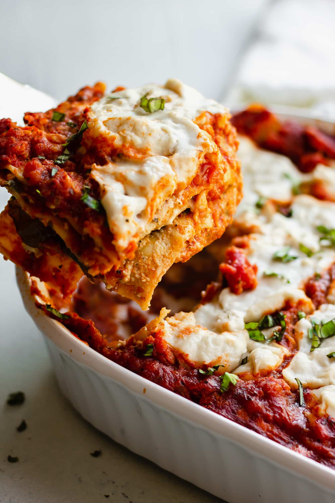

Lasagna

I don’t say this lightly… This is the BEST and EASIEST vegan lasagna
recipe! Layered with a rich marinara, creamy ricotta, spinach, noodles and
topped with ooey-gooey vegan mozzarella cheese. No need to pre-cook the
noodles!
Ingredients
- 1 cup of dried red lentils
- (2) 25-ounce jars of marinara sauce
- 1 cup of raw cashers
- 14.5 ounce firm tofu
- 1/2 cup nurtritional yeast
- 3 tablespoons fresh lemon juice from about 2 lemons
- 1 teaspoon salt
- 1 teaspoon dired basil
- 1 teaspoon oregano
- 1/2 teaspoon garlic powder
- 3 cups baby spinach
- 1 box lasagna noodles
- 2-3 cups Vegan Mozzarella Cheese or shredded vegan mozzarella
Instructions
- Cook the red lentils. Add 1 cup dried red lentils and 3 cups of water to a medium pot. Bring to a boil, and then simmer for about 20 minutes. Drain the lentils in a fine strainer, and then add back to the pot and stir in the marinara sauce. Set aside.
- Preheat the oven to 350 degrees
- Make the Cashew-Tofu Ricotta Add the cashews to a food processor and process until fine and crumbly. Then add the tofu in chunks, nutritional yeast, lemon juice, salt, basil, oregano and garlic powder to the food processor. Pulse until well combined and pretty smooth. If it's too thick, add a few tablespoons of water to blend. Set aside.
- Assembling the lasagna Add about 1 cup of lentil marinara to the bottom of a large 9×13 inch casserole dish. Spread it around evenly. Next add 4-5 lasagna noodles (uncooked). Spread half of the ricotta on top of the noodles. Top with half of the spinach. Add about 1 cup of the marinara sauce over the spinach, then place 4-5 lasagna noodles on top. Spread the rest of the ricotta over the noodles, then the rest of the spinach. Place 4-5 more noodles on top of the spinach, and then pour the rest of the sauce over the top, evenly.
- Cover tightly with foil and bake for 40 minutes
- While the lasagna is cooking, make your Vegan Mozzarella Cheese , if using. Alternatively, use 2-3 cups store bought vegan mozzarella cheese.
- After 40 minutes, remove the foil and spoon on the mozzarella (or sprinkle the cheese all over). Place the lasagna back in the oven and bake for 20 more minutes, uncovered. Remove from oven, let cool for at least 15 minutes and serve.
- Leftover lasagna will keep for about 4 days in the refrigerator. See notes for freezing instructions.
Notes
- Meaty Lasagna – Often I substitute vegan ground beef such as Beyond or Impossible for the lentils. To do this, simply cook the vegan ground beef in a pan until cooked, then stir in the marinara and proceed with the recipe.
- Veggie Lasagna – Feel free to add some veggies in addition to the spinach if you want. I like to roast a few zucchini/yellow squash/red onion and perhaps butternut squash, cauliflower or sweet potato. Then layer in the lasagna with the spinach layer.
- Nut Free Lasagna – To make the lasagna nut free, use store bought vegan cheese shreds for the top layer (and ensure it’s a nut free brand!). For the ricotta, omit the cashews and add another block of tofu. Add extra salt or seasonings to taste, and perhaps a little water if needed to blend.
- Lasagna Noodles – You don’t need to use no boil lasagna noodles for this recipe. The noodles will cook in the oven because of the extra sauce. I’ve tested it with gluten free, whole wheat and regular noodles. They all work well. If you want to use no boil noodles or cook the noodles beforehand, you can, but I would recommend using a bit less marinara sauce and you could cut the cook time down to 30-40 minutes.
- Freezer Lasagna – Assemble the lasagna, but instead of baking, let cool, cover and wrap well and freeze. Alternatively, you can freeze it after baking and cooling. Either way will work fine. When ready to serve, thaw overnight in the refrigerator, then bake in a 350 degrees F oven until warm throughout. Individual slices also freeze well.
Home